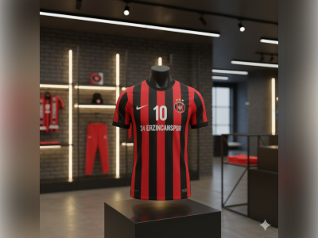

DUYURU
Yeni Sezon Formaları Satışta!

2024-2025 sezonu resmi formalarımız mağazamızda satışa sunulmuştur.
24 Erzincanspor'un yeni sezon formaları, modern tasarımı ve kaliteli kumaşı ile taraftarlarımızla buluşuyor. Kırmızı-siyah renklerimizi gururla taşıyan yeni formalarımız, en son teknoloji kumaşlardan üretilmiştir.
Forma Özellikleri
- %100 Polyester, nefes alabilir kumaş
- Kulüp arması ve sponsor logoları
- Erkek, kadın ve çocuk bedenleri mevcut
- Özel baskı seçenekleri
Formalarımızı stadyum mağazamızdan veya online mağazamızdan satın alabilirsiniz. Tüm formalarımız resmi lisanslıdır.
Fiyatlar
Yetişkin Forması: ₺450
Çocuk Forması: ₺350
Kaleci Forması: ₺500
Kombine kart sahiplerine %10 indirim uygulanmaktadır.